01
Task and parts
A VLM turns the sentence into tasks and writes a part table. An image-to-3D generator makes the shell, which is set upright and scaled.
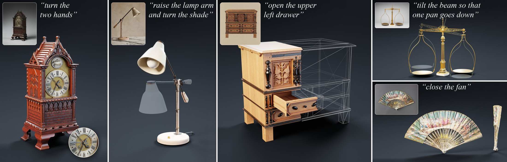
Articulated 3D assets are essential for robot learning in simulation, yet building them by hand is slow and needs expert modeling. Image-to-3D generators follow a single image closely but output one fused shell without parts, interiors or joints. Agentic computer-aided design (CAD) methods write clean parts and explicit joints, but their geometry is coarse and drifts from the image. We present SPARK+, which turns an image and a task sentence into an articulated asset whose links are hybrids of a generated shell for the look and CAD programs for part boundaries, hidden geometry and the collision body used in simulation. A vision-language model plans the parts, a CAD agent writes every link against measurements of the shell, and the joints are placed and limited on the hybrid model. SPARK+ supports fixed, revolute, prismatic, continuous and helical joints. Experiments on 100 objects of ArticulateArena and on objects without ground truth show that SPARK+ gives the shapes closest to the ground truth and keeps the look of the input image, with joint error on par with the strongest CAD pipelines. Code will be open sourced.
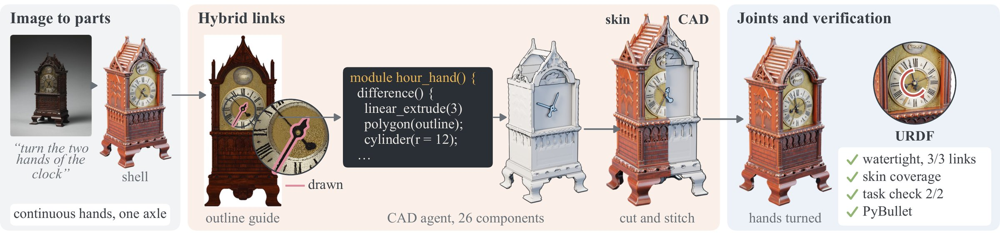
A VLM turns the sentence into tasks and writes a part table. An image-to-3D generator makes the shell, which is set upright and scaled.
An image model draws a closed loop around each movable part on a render of the shell; each piece snaps to the nearest strong crease.
One call plans all links as components, which are written in parallel as OpenSCAD, clipped to the shell and repaired over rounds.
The shell is cut along the outlines and each piece is joined with its CAD. Joints are placed, searched and limited, then verified and exported as URDF.
Qualitative results on objects without ground truth. Every result is shown open with its own appearance.
Wardrobe“open both doors”

Chest of drawers“open the small upper left drawer”
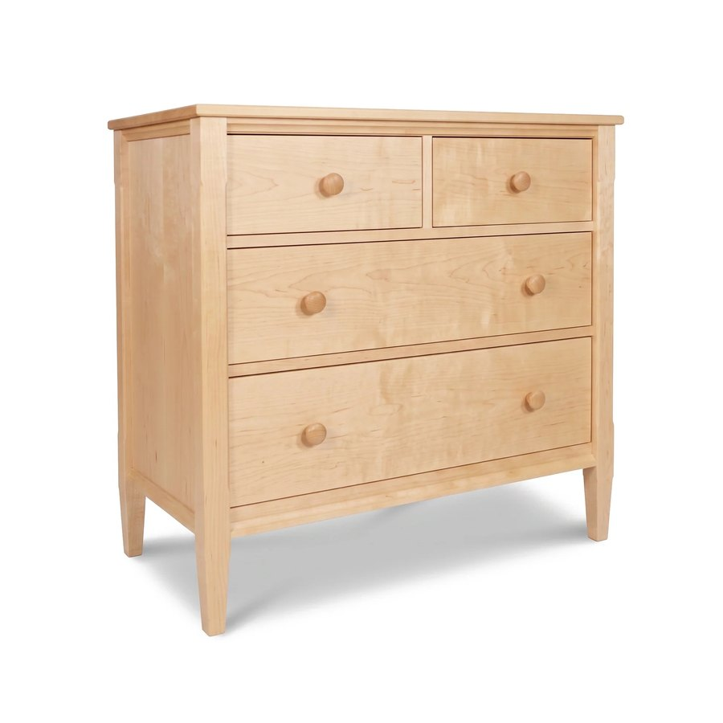
Highboy“open the upper left drawer”
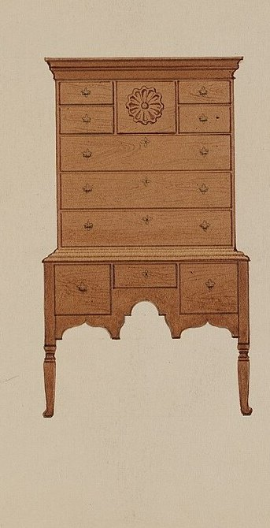
Microwave“open the microwave door”
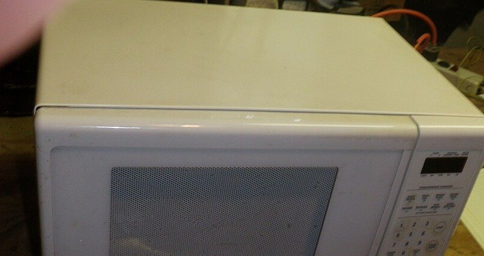
Triptych“close the two side wings”
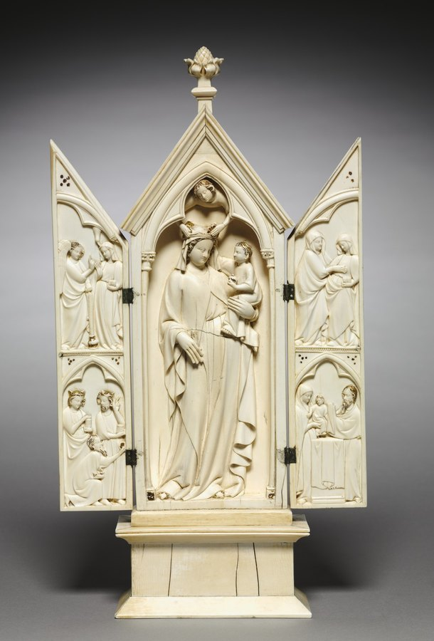
Desk lamp“raise the lamp arm and turn the shade”
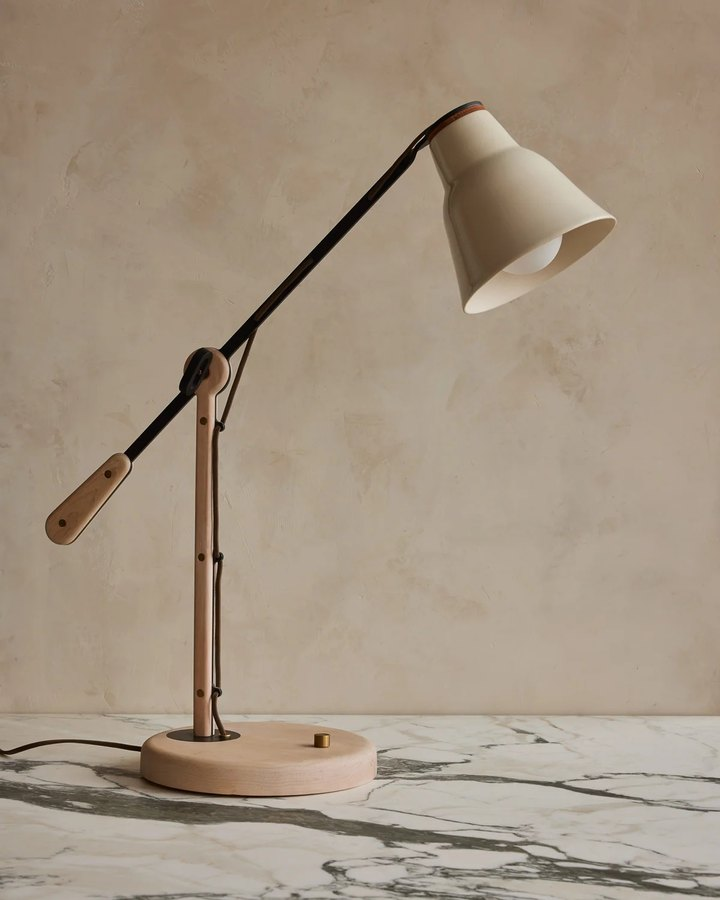
Wheelchair“turn the two large wheels”
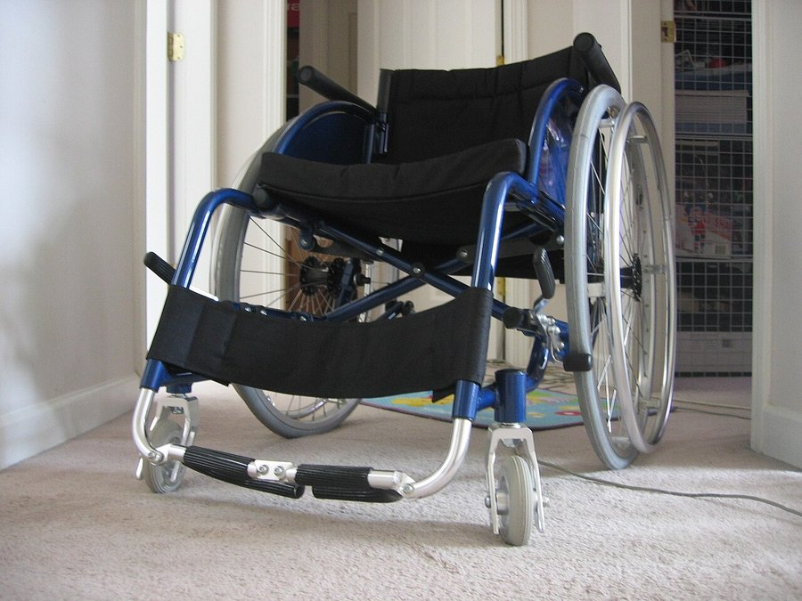
One image, several tasks. Each row comes from the same image and shell, with the task sentence under each result.
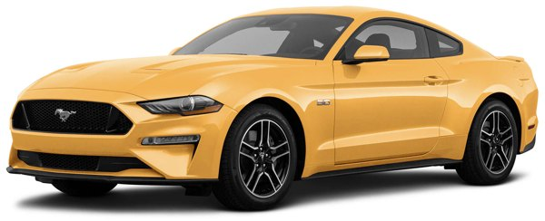
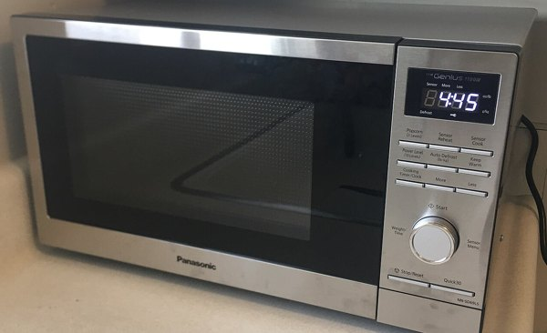
Revolute, prismatic, continuous and helical joints, each shown on one result with its task sentence.
Qualitative results on ground-truth objects of ArticulateArena. The input is the benchmark’s render at rest, and every model is shown opening.
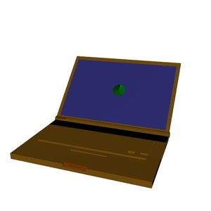
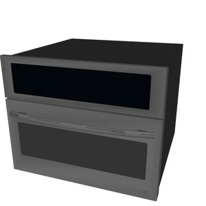
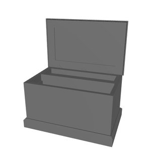
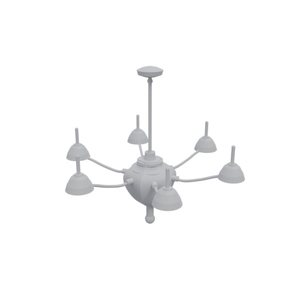
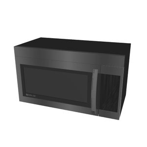
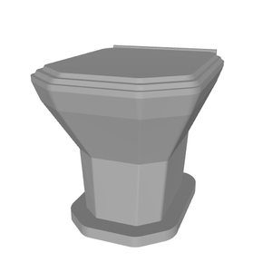
A suction fingertip opens a door, closes a lid, pulls out a drawer and turns a knob in MuJoCo.